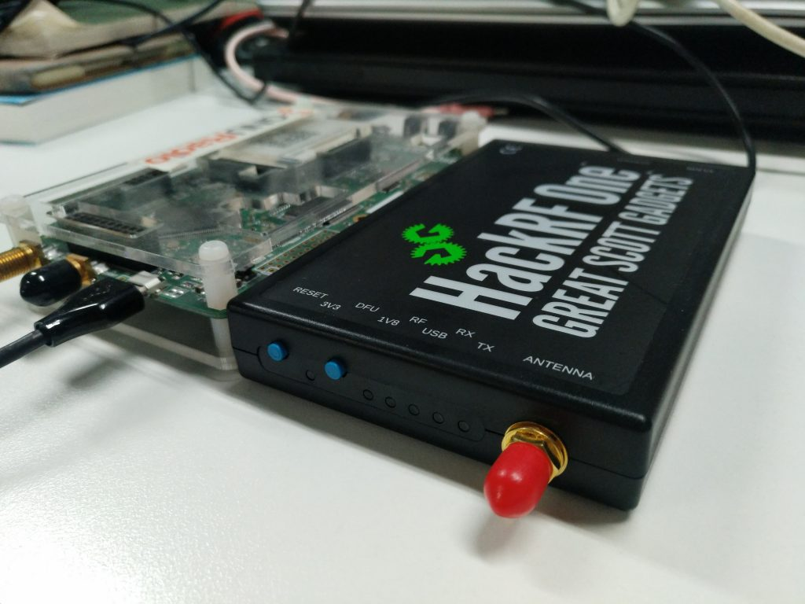
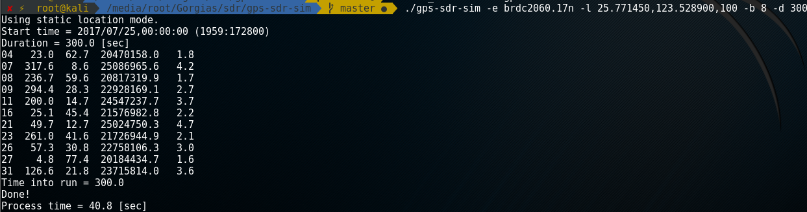
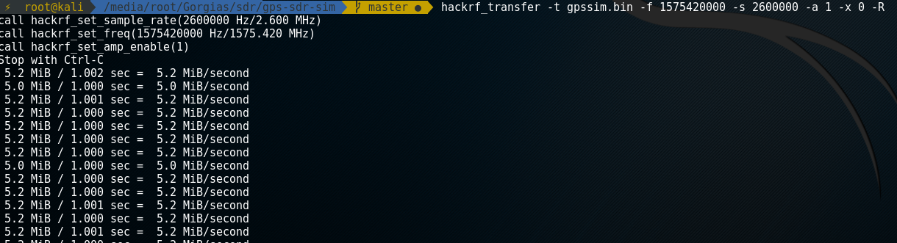
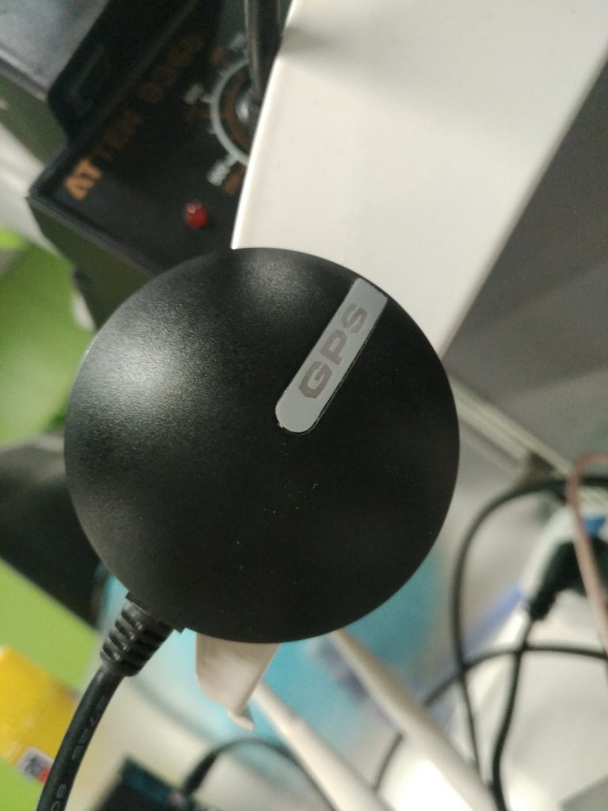
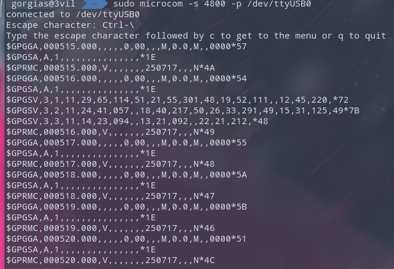
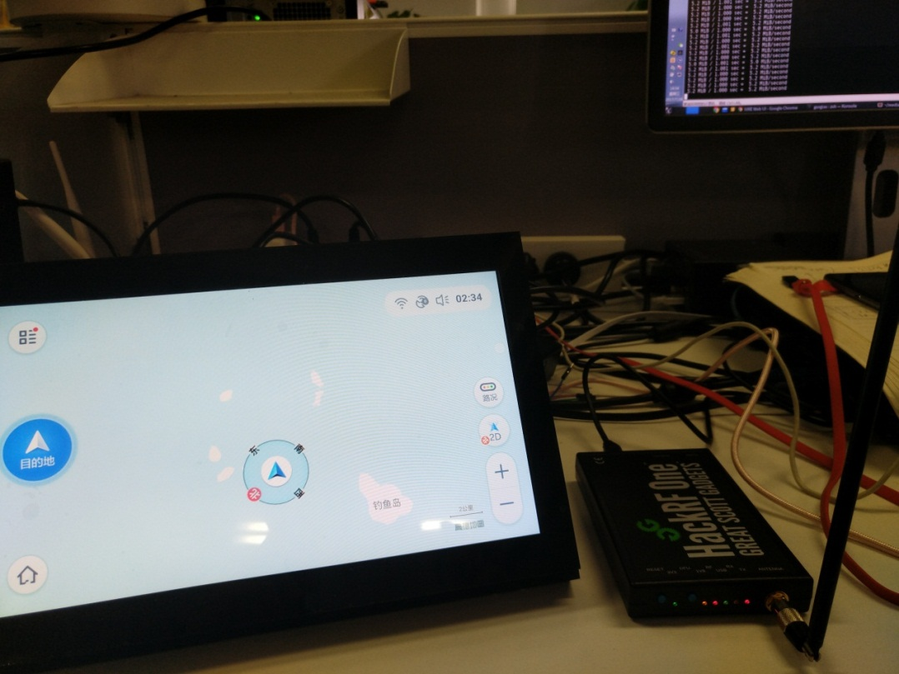
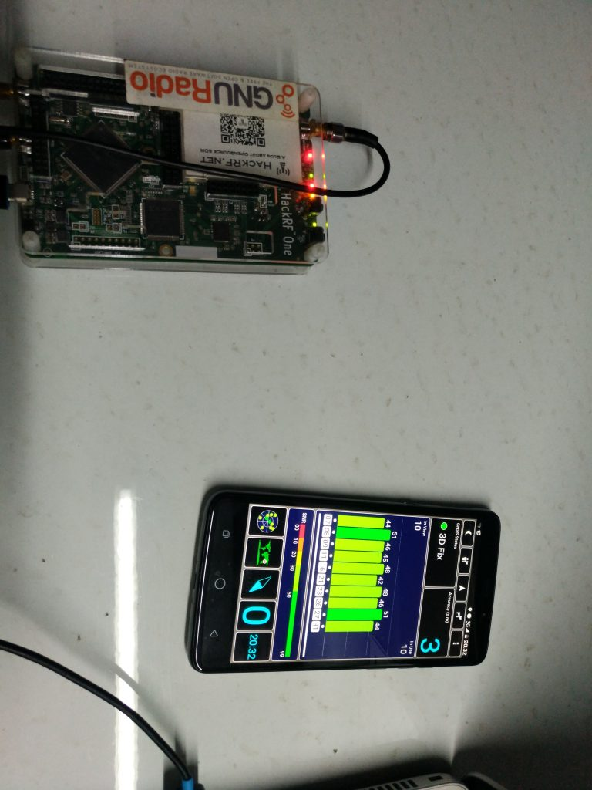

HackRF GPS 欺骗笔记
前言
Leader把他的两个HackRF One借给我玩，我打算用它来做GPS欺骗实验。
第一次接触软件无线电，开始感兴趣了，也打算把它学好。

测试环境
HackRF One 市面上有两个版本，一个是美国原版，一个是星天无限版。
作者Mike Ossmann在第一版HackRF Jawbreaker时通过Kickstart融资成功，之后Mike Ossmann开始进行了第二版HackRF One的开发，刚开始开源项目的代码和文档都在github上，2014年3月13日一个名叫星天无限的中国厂商”提前”发布了HackRF One。
经过实际测试，同样固件版本的情况下，星天版因为有功放，信号强度比美版要强并且稳定很多。
天线使用的是带吸盘的加感鞭状天线。
- Computer: HP 840 G3
- System: Kali 2016.2
- SDR: HackRF One 星天版/美版
环境准备
HackRF
玩SDR可以下载 GNU Radio Live 镜像。
也可以使用其他Linux发行版，Arch Linux官方源自带SDR相关的工具，Kali 自带HackRF的驱动和工具，所以接上电脑直接在terminal输入hackrf_info能看到信息。
1 | hackrf_info version: 2017.02.1 |
在此之前我升级了hackrf的固件，所以这边看到的信息是新版。
附带一下升级的过程，先刷入SPI固件
1 | git clone https://github.com/mossmann/hackrf |
按一下Reset按钮，再更新CPLD
1 | hackrf_cpldjtag -x hackrf_cpld_default.xsvf |
GPS-SDR-SIM
GPS-SDR-SIM用于生成GPS基带数据流，可用于bladeRF, HackRF, and USRP等SDR平台。
下载并编译GPS-SDR-SIM
1 | git clone https://github.com/osqzss/gps-sdr-sim |
1 | Usage: gps-sdr-sim [options] |
GPS
GPS(Global Positioning System)全称是全球定位系统，GPS接收机至少要收到4颗卫星的信号才能精确定位，三颗测量用WGS-84作为标准的坐标，还有一颗用于提供时间数据，用于减少电磁波传播时间导致的误差。收到的星数越多，定位越精确。关于GPS更多的知识可以参考Wiki Global Positioning System
从NASA的CDDIS数据中心服务器，下载GPS导航的广播星历数据，然后解压，结尾是n的。
1 | ftp://cddis.gsfc.nasa.gov/pub/gps/data/daily/2017/brdc/brdc2060.17n.Z |
国内网络环境几乎下载不了，建议走代理下载
1 | proxychains4 -q wget ftp://cddis.gsfc.nasa.gov/pub/gps/data/daily/2017/brdc/brdc2060.17n.Z |
文件每天都在更新，其实哪一天都无所谓。
这是星历文件名的格式
1 | YYYY/brdc/brdcDDD0.YYn.Z |
关于格式命名规则可以参考Broadcast ephemeris data
解压之后可以看到星历数据是RINEX(Receiver Independent Exchange Format)的2.0格式。
GPS-SDR-SIM通过星历数据生成采样数据。-T选项可以指定时间。
选择高德地图上钓鱼岛的坐标，四舍五入到小数点后6位，随便加上一个海拔，放在location参数名后面。
1 | ./gps-sdr-sim -e brdc2060.17n -l 25.771450,123.528900,100 -b 8 -d 200 |

持续时间和文件大小有关，默认300秒，把它改成200秒，占1GB空间。HackRF的数据位宽是8位，所以iq_bits设成8。
下面是hackrf_transfer的详细说明
1 | specify one of: -t, -c, -r, -w |
生成的gpssim.bin的采样频率为2.6MHz，使用hackrf_transfer设定的采样频率也要与之对应。-x代表TX VGA增益，先设为0db，如果搜不到再加，最大47db。下面是民用的频段，这里我们使用L1的频段。
- L1 1575.42MHz
- L2 1227.60MHz
- L3 1381.05MHz
- L4 1841.40MHz
- L5 1176.45MHz
使用hackrf_transfer发射无线电信号，开启增益并设成最大，循环发射。
1 | hackrf_transfer -t gpssim.bin -f 1575420000 -s 2600000 -a 1 -x 47 -R |

使用USB的GPS接收器也能收到伪造符合NMEA(National Marine Electronics Association)规范的数据。
关于数据格式可以参考NMEA data

1 | sudo microcom -s 4800 -p /dev/ttyUSB0 |

这里使用美版HackRF，不到一分钟目标设备的坐标定位就被欺骗到了海岛

这是使用星天版欺骗成功的结果
